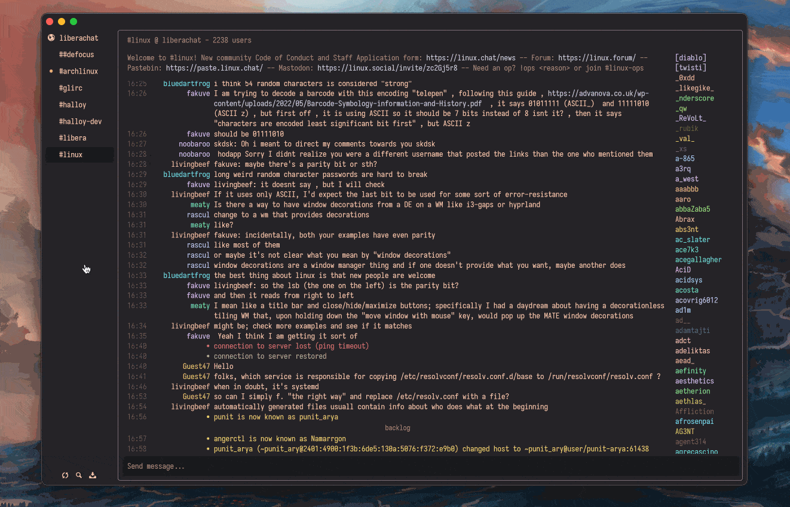
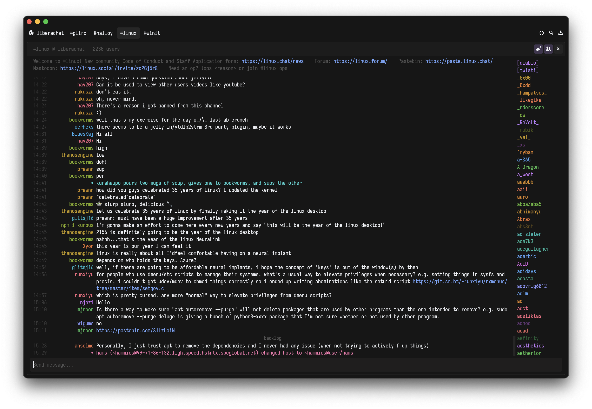
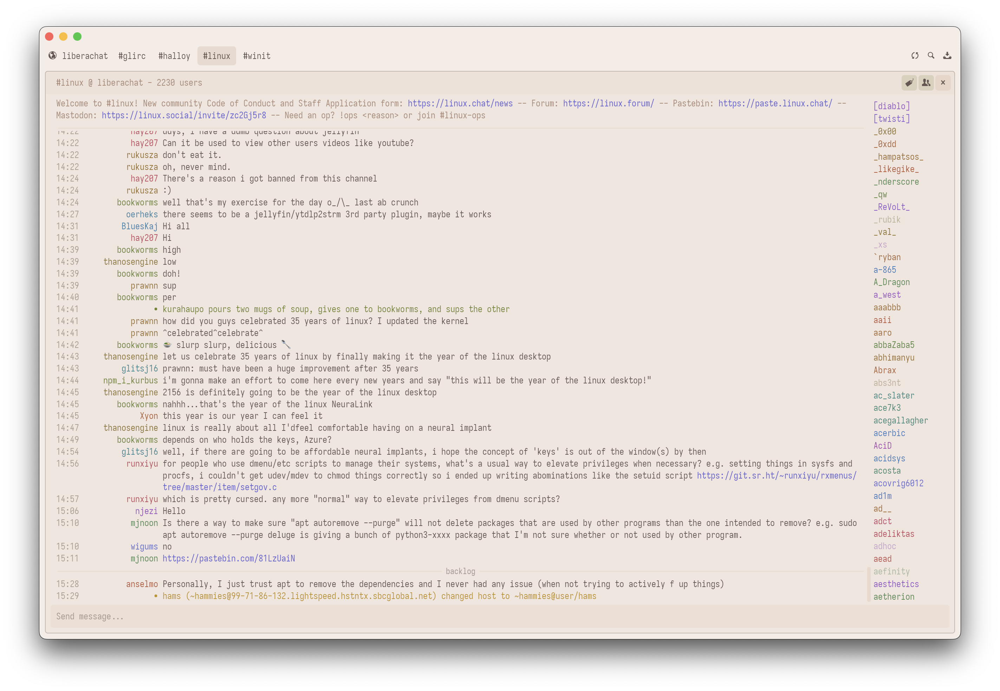
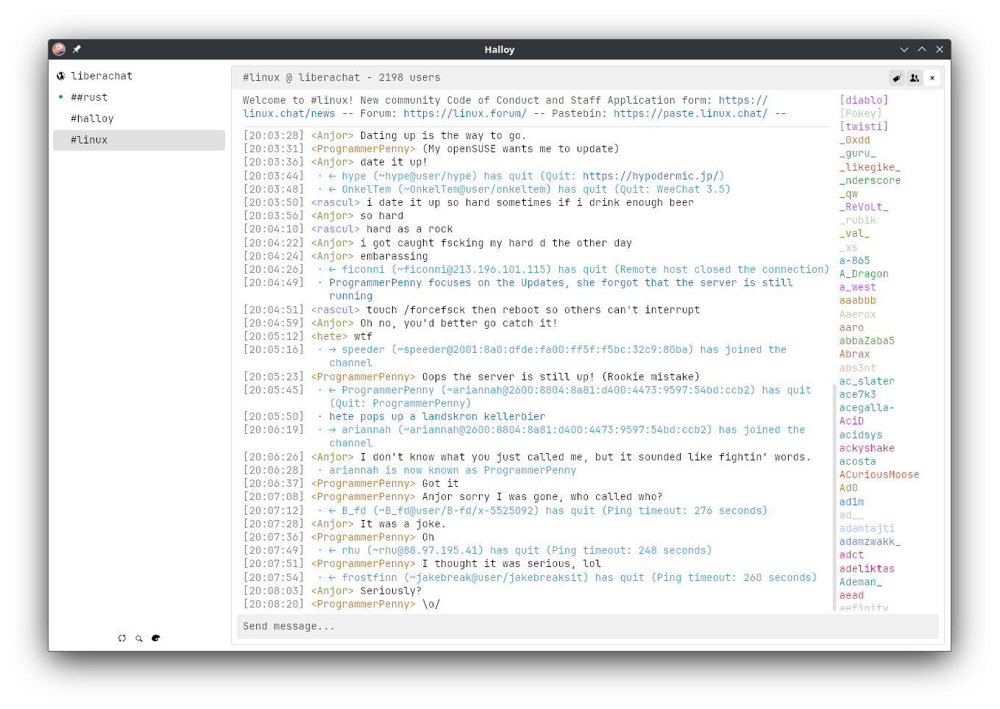
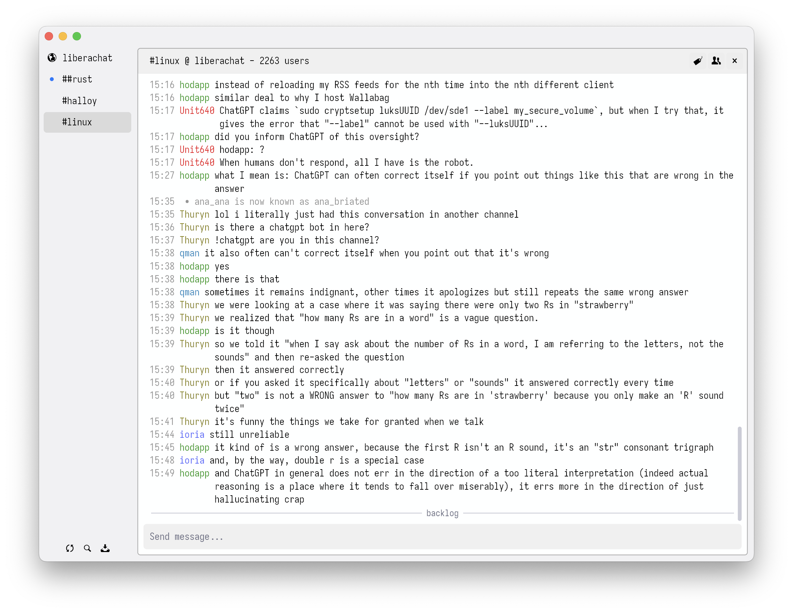
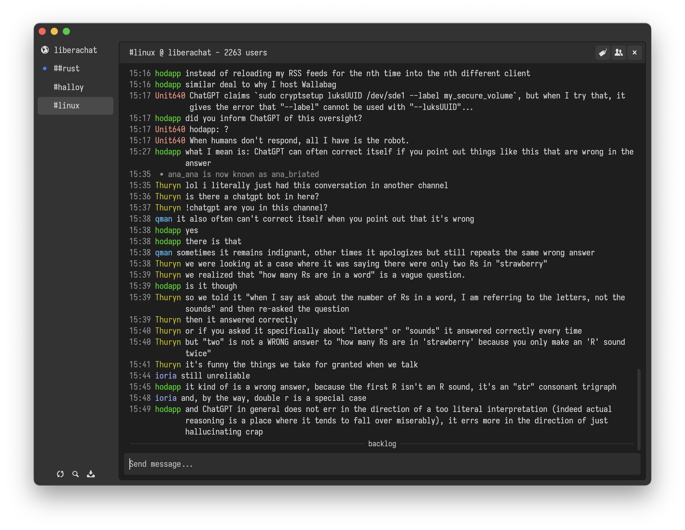
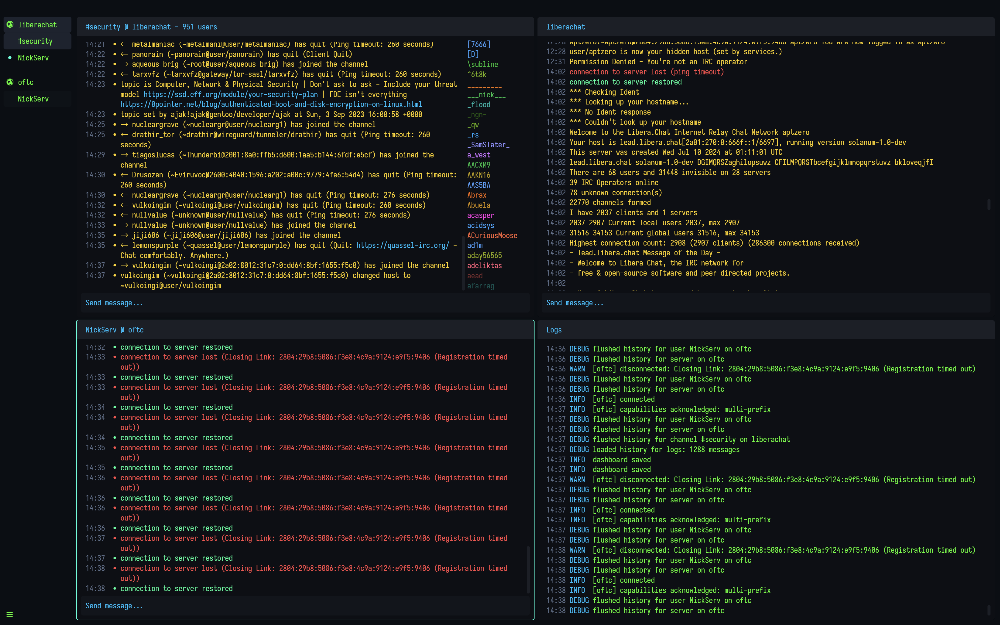

Halloy

Halloy is an open-source IRC client written in Rust, with the iced GUI library. It aims to provide a simple and fast client for Mac, Windows, and Linux platforms.
- IRCv3.2 capabilities
- SASL support
- DCC Send
- Keyboard shortcuts
- Auto-completion for nicknames, commands, and channels
- Notifications support
- Multiple channels at the same time across servers
- Commandbar for for quick actions
- Custom themes
- Portable mode
Contributing
Halloy is free and open source. You can find the source code as well as report issues and feature requests on GitHub.
Installing Halloy
💡 To get the latest nightly version of Halloy, you can build from source.
Pre-built binaries
Download pre-built binaries from GitHub page.
Packaging status
macOS
The following third party repositories are available for macOS
Homebrew
brew install --cask halloy
MacPorts
sudo port install halloy
Linux
The following third party repositories are available for Linux
Flatpak
https://flathub.org/apps/org.squidowl.halloy
Snapcraft
Windows
Winget
winget install squidowl.halloy
Build from source
Clone the Halloy GitHub repository into a directory of your choice and build with cargo.
Requirements:
# Clone the repository
git clone https://github.com/squidowl/halloy.git
cd halloy
# Build and run
cargo build --release
cargo run --release
Getting started
To get started with Halloy, you need to connect to at least one IRC server. The template config file has been set up with the Libera server. However, there are many other servers available: OFTC, Undernet, EFnet, QuakeNet and many more. Halloy can connect to multiple servers at the same time.
Once connected to a server, you can join channels. This can be done automatically from the config file or manually using the join command: /join #channel1. To find channels, you can either use the list command: /list, or browse for channels online.
💡 Configuration in Halloy happens through a
config.tomlfile. See Configuration.
Here are a few useful IRC commands for a new user2
| Command | Example | Description |
|---|---|---|
/join | /join #halloy | Join a new channel |
/part | /part #halloy | Part a channel |
/nick | /nick halloyisgreat | Change your nickname |
/whois nickname | /whois halloyisgreat | Displays information of nickname requested |
/list *keyword* | /list *linux* | List channels. Keyword is optional |
Channel names always start with a # symbol and do not contain spaces.
Find more commands here.
Get in touch
Join #halloy on libera.chat (link) if you have questions, looking for help or just want to say hello.
For feature requests or reporting issues, please open a ticket on GitHub.
Maintainers
Connect with Soju
To connect with a soju bouncer, the configuration below can be used as a template. Simply change so it fits your credentials.
[servers.libera]
nickname = "casperstorm"
username = "<your-username>/irc.libera.chat@desktop"
server = "irc.squidowl.org"
password = "<your-password>"
Connect with ZNC
To connect with a ZNC bouncer, the configuration below can be used as a template. Simply change so it fits your credentials.
[servers.libera]
nickname = "<znc-user>/<znc-network>"
server = "znc.example.com"
password = "<your-password>"
Portable mode
To enable portable mode for Halloy, simply place the config.toml file in the same directory as the running executable.
.
├── Halloy.app
└── config.toml
Multiple servers
Creating multiple [servers] sections lets you connect to multiple servers.
All configuration options can be found here.
[servers.liberachat]
nickname = "halloy-user"
server = "irc.libera.chat"
channels = ["#halloy"]
[servers.oftc]
nickname = "halloy-user"
server = "irc.oftc.net"
channels = ["#asahi-dev"]
Storing passwords in a File
If you need to commit your configuration file to a public repository, you can keep your passwords in a separate file for security. Below is an example of using a file for nickname password for NICKSERV.
💡 Avoid adding extra lines in the password file, as they will be treated as part of the password.
💡 Shell expansions (e.g.
"~/"→"/home/user/") are not supported in path strings.
[servers.liberachat]
nickname = "foobar"
nick_password_file = "/home/user/config/halloy/password"
server = "irc.libera.chat"
channels = ["#halloy"]
Text Formatting
Text can be formatted in Halloy by using the /format (or /f) command.
Attributes
Below is a table with the supported text attributes.
| Action | Markdown | Token |
|---|---|---|
| Italics | _italic text_ | $iitalic text$i |
| Bold | __bold text__ | $bbold text$b |
| Italic and Bold | ___italic and bold___ | $b$iitalic and bold$i$b |
~~strikethrough~~ | $sstrikethrough$s | |
| Underline | - | $uunderline$u |
| Code | `code` | $mcode$m |
| Spoiler | ||spoiler|| | - |
Example
/format __this is bold__ $iand this is italic$i
Will render the following:
this is bold and this is italic
Color
| Action | Token |
|---|---|
| Text color (fg) | $c0 |
| Text and background (fg & bg) | $c0,1 |
| End color | $c |
The number next to the $c token indicates the color. For a comprehensive list of all numbers, see the following ircdocs.horse documentation. Below, the first 00 to 15 colors are defined and have been assigned aliases for convenience.
Colors
- 00 - white
- 01 - black
- 02 - blue
- 03 - green
- 04 - red
- 05 - brown
- 06 - magenta
- 07 - orange
- 08 - yellow
- 09 - lightgreen
- 10 - cyan
- 11 - lightcyan
- 12 - lightblue
- 13 - pink
- 14 - grey
- 15 - lightgrey
Example
/format $cred,lightgreenfoobar$c
/format $c04,09foobar$c
Will both render the following:
foobarConfiguration
By default, Halloy will only format text when using the /format command. This, however, can be changed with the auto_format configuration option:
[buffer.text_input]
auto_format = "disabled" | "markdown" | "all"
Monitor users
Halloy has monitor support if the server has the IRCv3 Monitor extension.
💡 A protocol for notification of when clients become online/offline
To use the feature you need to add the user(s) you wish to monitor. This can be done in two ways:
- You can add a list of user directly to the configuration file. See configuration option.
- You can add users through
/monitordirectly in Halloy.
Examples with the /monitor command:
/monitor + casperstorm # Add user to list being monitored
/monitor - casperstorm # Remove user from list being monitored
/monitor c # Clear the list of users being monitored
/monitor l # Get list of users being monitored
/monitor s # For each user in the list being monitored, get their current status
Configuration
To edit configuration parameters, create a config.toml file located in your configuration directory:
- Windows:
%AppData%\halloy - Mac:
~/Library/Application Support/halloyor$HOME/.config/halloy - Linux:
$XDG_CONFIG_HOME/halloyor$HOME/.config/halloy
💡 You can easily open the config file directory from command bar in Halloy
Example config for connecting to Libera:
[servers.liberachat]
nickname = "halloy-user"
server = "irc.libera.chat"
channels = ["#halloy"]
[buffer.channel.topic]
enabled = true
[buffer]
A buffer displays messages within a specific context.
Examples of buffers:
- Channel
- Server
- Private Query
- File transfer
Each buffer is shown inside a pane.
Configuration
| Name | Description |
|---|---|
| Channel | Channel settings for when buffer context is a channel |
| Internal Messages | Halloy specific status messages |
| Nickname | Customize how nicknames are displayed within a buffer |
| Server Messages | Settings for server messages such as join, part, quit etc |
| Text Input | Customize the text input for a buffer |
| Timestamp | Customize how timestamps are displayed within a buffer |
| Chat History | Customize IRCv3 Chat History extension |
[buffer.away]
Customize away behaviour.
Example
[buffer.away]
appearance = "dimmed"
appearance
Controls the appearance of away nicknames in buffers.
- type: string
- values:
"dimmed","solid" - default:
"dimmed"
[buffer.channel]
A channel represents a IRC channel.
Each channel is shown inside a buffer.
Configuration
| Name | Description |
|---|---|
| Nicklist | Customize the nicklist whitin a channel buffer |
| Message | Customize the messages whitin a channel buffer |
| Topic | Customize the topic banner within a channel buffer |
[buffer.channel.nicklist]
Customize the nicklist within a channel buffer.
Example
[buffer.channel.nicklist]
color = "unique"
show_access_levels = true
alignment
Horizontal alignment of nicknames.
- type: string
- values:
"left","right" - default:
"left"
color
Nickname colors in the nicklist. "unique" generates colors by randomizing the hue, while keeping the saturation and lightness from the theme's nickname color.
- type: string
- values:
"solid","unique" - default:
"unique"
enabled
Control if nicklist should be shown or not by default.
- type: boolean
- values:
true,false - default:
true
position
Nicklist position in the pane.
- type: string
- values:
"left","right" - default:
"right"
show_access_levels
Show access levels in front of nicknames (@, +, ~, etc.).
- type: boolean
- values:
true,false - default:
true
width
Overwrite nicklist width in pixels.
- type: integer
- values: any positive integer
- default: not set
[buffer.channel.message]
Customize the message within a channel buffer.
Example
[buffer.channel.message]
nickname_color = "unique"
nickname_color
Nickname colors in the message. "unique" generates colors by randomizing the hue, while keeping the saturation and lightness from the theme's nickname color.
- type: string
- values:
"solid","unique" - default:
"unique"
[buffer.channel.topic]
Customize the topic banner within a channel buffer.
Example
[buffer.channel.topic]
enabled = true
max_lines = 2
enabled
Control if topic should be shown or not by default.
- type: boolean
- values:
true,false - default:
false
max_lines
Amount of visible lines before you have to scroll in topic banner.
- type: integer
- values: any positive integer
- default:
2
[buffer.internal_messages]
Internal messages are messages sent from Halloy itself.
Configuration
| Name | Description |
|---|---|
| Success | Internal messages which is considered a success |
| Error | Internal messages which is considered a error |
[buffer.internal_messages.success]
A internal messages which is considered a "success" such as when a connection was restored, or when connected succesfully to a server.
Example
[buffer.internal_messages.success]
enabled = true
smart = 180
enabled
Control if internal message type is enabled.
- type: boolean
- values:
true,false - default:
true
smart
Only show internal message if received within the given time duration (seconds).
- type: integer
- values: any positive integer
- default: not set
[buffer.internal_messages.error]
A internal messages which is considered a "error" such as when a connection was lost, or when connection to server failed.
Example
[buffer.internal_messages.error]
enabled = true
smart = 180
enabled
Control if internal message type is enabled.
- type: boolean
- values:
true,false - default:
true
smart
Only show internal message if received within the given time duration (seconds).
- type: integer
- values: any positive integer
- default: not set
[buffer.nickname]
Customize how nicknames are displayed within a buffer.
Example
[buffer.nickname]
alignment = "right"
brackets = { left = "<", right = ">" }
color = "unique"
show_access_levels = true
alignment
Horizontal alignment of nicknames.
- type: string
- values:
"left","right","top" - default:
"left"
brackets
Brackets around nicknames.
- type: object
- values:
{ left = "<any string>", right = "<any string>" } - default:
{ left = "", right = "" }
color
Nickname colors in a channel buffer. "unique" generates colors by randomizing the hue, while keeping the saturation and lightness from the theme's nickname color.
- type: string
- values:
"solid","unique" - default:
"unique"
show_access_levels
Show access levels in front of nicknames (@, +, ~, etc.).
- type: boolean
- values:
true,false - default:
true
[buffer.server_messages]
Server messages are messages sent from a irc server.
Configuration
| Name | Description |
|---|---|
| Change Host | Message is sent when a user changes host |
| Join | Message is sent when a user joins a channel |
| Monitored Offline | Message is sent when a monitored user goes offline |
| Monitored Online | Message is sent when a monitored user goes online |
| Part | Message is sent when a user leaves a channel |
| Quit | Message is sent when a user closes the connection to a channel or server |
| Topic | Message is sent when a user changes channel topic |
[buffer.server_messages.change_host]
Server message is sent when a user's host changes.
Example
[buffer.server_messages.change_host]
enabled = true
smart = 180
enabled
Control if internal message type is enabled.
- type: boolean
- values:
true,false - default:
true
smart
Only show server message if the user has sent a message in the given time interval (seconds) prior to the server message.
- type: integer
- values: any positive integer
- default: not set
exclude
Exclude channels from receiving the server messag.
If you pass ["#halloy"], the channel #halloy will not receive the server message. You can also exclude all channels by using a wildcard: ["*"].
- type: array of strings
- values: array of any strings
- default:
[]
include
Include channels to receive the server message.
If you pass ["#halloy"], the channel #halloy will receive the server message. The include rule takes priority over exclude, so you can use both together. For example, you can exclude all channels with ["*"] and then only include a few specific channels.
- type: array of strings
- values: array of any strings
- default:
[]
[buffer.server_messages.join]
Server message is sent when a user joins a channel.
Example
[buffer.server_messages.join]
enabled = true
smart = 180
username_format = "full"
enabled
Control if internal message type is enabled.
- type: boolean
- values:
true,false - default:
true
smart
Only show server message if the user has sent a message in the given time interval (seconds) prior to the server message.
- type: integer
- values: any positive integer
- default: not set
username_format
Adjust the amount of information displayed for a username in server messages. If you choose "short", only the nickname will be shown. If you choose "full", the nickname, username, and hostname (if available) will be displayed.
- type: string
- values:
"full","short" - default:
"full"
exclude
Exclude channels from receiving the server messag.
If you pass ["#halloy"], the channel #halloy will not receive the server message. You can also exclude all channels by using a wildcard: ["*"].
- type: array of strings
- values: array of any strings
- default:
[]
include
Include channels to receive the server message.
If you pass ["#halloy"], the channel #halloy will receive the server message. The include rule takes priority over exclude, so you can use both together. For example, you can exclude all channels with ["*"] and then only include a few specific channels.
- type: array of strings
- values: array of any strings
- default:
[]
[buffer.server_messages.monitored_offline]
Server message is sent if a monitored user goes offline.
💡 Read more about monitoring users.
Example
[buffer.server_messages.monitored_offline]
enabled = true
smart = 180
enabled
Control if internal message type is enabled.
- type: boolean
- values:
true,false - default:
true
smart
Only show server message if the user has sent a message in the given time interval (seconds) prior to the server message.
- type: integer
- values: any positive integer
- default: not set
[buffer.server_messages.monitored_online]
Server message is sent if a monitored user goes online.
💡 Read more about monitoring users.
Example
[buffer.server_messages.monitored_online]
enabled = true
smart = 180
enabled
Control if internal message type is enabled.
- type: boolean
- values:
true,false - default:
true
smart
Only show server message if the user has sent a message in the given time interval (seconds) prior to the server message.
- type: integer
- values: any positive integer
- default: not set
[buffer.server_messages.part]
Server message is sent when a user leaves a channel.
Example
[buffer.server_messages.part]
smart = 180
enabled
Control if internal message type is enabled.
- type: boolean
- values:
true,false - default:
true
smart
Only show server message if the user has sent a message in the given time interval (seconds) prior to the server message.
- type: integer
- values: any positive integer
- default: not set
username_format
Adjust the amount of information displayed for a username in server messages. If you choose "short", only the nickname will be shown. If you choose "full", the nickname, username, and hostname (if available) will be displayed.
- type: string
- values:
"full","short" - default:
"full"
exclude
Exclude channels from receiving the server messag.
If you pass ["#halloy"], the channel #halloy will not receive the server message. You can also exclude all channels by using a wildcard: ["*"].
- type: array of strings
- values: array of any strings
- default:
[]
include
Include channels to receive the server message.
If you pass ["#halloy"], the channel #halloy will receive the server message. The include rule takes priority over exclude, so you can use both together. For example, you can exclude all channels with ["*"] and then only include a few specific channels.
- type: array of strings
- values: array of any strings
- default:
[]
[buffer.server_messages.quit]
Server message is sent when a user closes the connection to a channel or server.
Example
[buffer.server_messages.quit]
exclude = ["*"]
include = ["#halloy"]
enabled
Control if internal message type is enabled.
- type: boolean
- values:
true,false - default:
true
smart
Only show server message if the user has sent a message in the given time interval (seconds) prior to the server message.
- type: integer
- values: any positive integer
- default: not set
username_format
Adjust the amount of information displayed for a username in server messages. If you choose "short", only the nickname will be shown. If you choose "full", the nickname, username, and hostname (if available) will be displayed.
- type: string
- values:
"full","short" - default:
"full"
exclude
Exclude channels from receiving the server messag.
If you pass ["#halloy"], the channel #halloy will not receive the server message. You can also exclude all channels by using a wildcard: ["*"].
- type: array of strings
- values: array of any strings
- default:
[]
include
Include channels to receive the server message.
If you pass ["#halloy"], the channel #halloy will receive the server message. The include rule takes priority over exclude, so you can use both together. For example, you can exclude all channels with ["*"] and then only include a few specific channels.
- type: array of strings
- values: array of any strings
- default:
[]
[buffer.server_messages.topic]
Server message is sent when a (op) user changes channel topic.
Example
[buffer.server_messages.topic]
enabled = true
enabled
Control if internal message type is enabled.
- type: boolean
- values:
true,false - default:
true
exclude
Exclude channels from receiving the server messag.
If you pass ["#halloy"], the channel #halloy will not receive the server message. You can also exclude all channels by using a wildcard: ["*"].
- type: array of strings
- values: array of any strings
- default:
[]
include
Include channels to receive the server message.
If you pass ["#halloy"], the channel #halloy will receive the server message. The include rule takes priority over exclude, so you can use both together. For example, you can exclude all channels with ["*"] and then only include a few specific channels.
- type: array of strings
- values: array of any strings
- default:
[]
[buffer.text_input]
Customize the text input for in buffers.
Example
[buffer.text_input]
visibility = "always"
auto_format = "markdown"
visibility
Text input visibility. When set to "focused" it will only be visible when the buffer is focused.
- type: string
- values:
"always","focused" - default:
"always"
auto_format
Control if the text input should auto format the input. By default text is only formatted when using the /format command.
- type: string
- values:
"disabled","markdown","all" - default:
"disabled"
💡 Read more about text formatting.
[buffer.timestamp]
Customize how timestamps are displayed within a buffer.
Example
[buffer.timestamp]
format = "%R"
brackets = { left = "[", right = "]" }
format
Controls the timestamp format. The expected format is strftime.
- type: string
- values: any string
- default:
"%R"
brackets
Brackets around timestamps.
- type: object
- values:
{ left = "<any string>", right = "<any string>" } - default:
{ left = "", right = "" }
[buffer.chathistory]
Customize IRCv3 Chat History extension
Example
[buffer.chathistory]
infinite_scroll = true
infinite_scroll
Automatically request older history when scrolling to the top of a channel/query buffer
- type: boolean
- values:
true,false - default:
false
[file_transfer]
File transfer configuration options.
Example
[file_transfer]
save_directory = "$HOME/Downloads"
passive = true
timeout = 180
save_directory
Default directory to open when prompted to save a file.
- type: string
- values: any string
- default:
"$HOME/Downloads"
passive
If true, act as the "client" for the transfer. Requires the remote user act as the server.
- type: boolean
- values:
true,false - default:
true
timeout
Time (in seconds) to wait before timing out a transfer waiting to be accepted.
- type: integer
- values: any positive integer
- default:
300
[file_transfer.server]
This section is required if passive = false. One side of the file transfer must
operate as the "server", who the other user connects with to establish a connection.
Example
[file_transfer.server]
public_address = "<some ip>"
bind_address = "<some ip>"
bind_port_first = 1024
bind_port_last = 5000
public_address
Address advertised to the remote user to connect to.
- type: string
- values: any string
- default: not set
public_address
Address to bind to when accepting connections.
- type: string
- values: any string
- default: not set
bind_port_first
First port in port range to bind to.
- type: integer
- values: any positive integer
- default: not set
bind_port_last
Last port in port range to bind to.
- type: integer
- values: any positive integer
- default: not set
[font]
Application wide font settings.
Example
[font]
family = "Comic Mono"
size = 13
family
Monospaced font family to use.
- type: string
- values: any string
- default: not set 1
size
Font size.
- type: integer
- values: any positive integer
- default: 13
Iosevka Term is provided by the application, and used by default.
[keyboard]
Customize keyboard shortcuts. Below is a list of all actions which can be mapped.
Example
[keyboard]
move_up = "alt+k"
move_down = "alt+j"
move_left = "alt+h"
move_right = "alt+l"
| Key | Description | Default MacOS | Default Other |
|---|---|---|---|
move_up | Moves focus up | ⌥ + ↑ | alt + ↑ |
move_down | Moves focus down | ⌥ + ↓ | alt + ↓ |
move_left | Moves focus left | ⌥ + ← | alt + ← |
move_right | Moves focus right | ⌥ + → | alt + → |
close_buffer | Close focused buffer | ⌘ + w | ctrl + w |
maximize_buffer | Maximize focused buffer | ⌘ + ↑ | ctrl + ↑ |
restore_buffer | Restore focused buffer | ⌘ + ↓ | ctrl + ↓ |
cycle_next_buffer | Cycle to next buffer | ctrl + tab | ctrl + tab |
cycle_previous_buffer | Cycle to previous buffer | ctrl + shift + tab | ctrl + shift + tab |
leave_buffer | Leave channel or close query | ⌘ + shift + w | ctrl + shift + w |
toggle_nick_list | Toggle nick list | ⌘ + ⌥ + m | ctrl + alt + m |
toggle_topic | Toggle topic | ⌘ + ⌥ + t | ctrl + alt + t |
toggle_sidebar | Toggle sidebar | ⌘ + ⌥ + b | ctrl + alt + b |
command_bar | Toggle command bar | ⌘ + k | ctrl + k |
reload_configuration | Refresh configuration file | ⌘ + r | ctrl + r |
file_transfers | Toggle File Transfers Buffer | ⌘ + j | ctrl + j |
logs | Toggle Logs Buffer | ⌘ + l | ctrl + l |
theme_editor | Toggle Theme Editor Window | ⌘ + t | ctrl + t |
[notifications]
Customize and enable notifications.
Example
[notifications]
highlight = { sound = "dong" }
direct_message = { sound = "peck", show_toast = true }
Following notifications are available:
| Name | Description |
|---|---|
connected | Triggered when a server is connected |
direct_message | Triggered when a direct message is received |
disconnected | Triggered when a server disconnects |
file_transfer_request | Triggered when a file transfer request is received |
highlight | Triggered when you were highlighted in a buffer |
reconnected | Triggered when a server reconnects |
sound
Notification sound.
Supports both built-in sounds, and external sound files (mp3, ogg, flac or wav placed inside the sounds folder within the configuration directory).
- type: string
- values:
"dong","peck","ring","squeak","whistle","bonk","sing"or external sound. - default: not set
show_toast
Notification should trigger a OS toast.
- type: boolean
- values:
true,false - default:
false
[pane]
A pane is composed by a single buffer. You can have multiple panes within Halloy. Each pane can be moved around by dragging it at the pane header.
Configuration
None
[proxy]
Proxy settings for Halloy.
Example
[proxy]
type = "socks5"
host = "192.168.1.100"
port = 1080
type
Proxy type.
- type: string
- values:
http,socks5 - default: not set
host
Proxy host to connect to .
- type: string
- values: any string
- default: not set
port
Proxy port to connect on.
- type: integer
- values: any positive integer
- default: not set
username
Proxy username (optional).
- type: string
- values: any string
- default: not set
password
Proxy password (optional).
- type: string
- values: any string
- default: not set
Scale factor
Application wide scale factor.
Example
scale_factor = 1.1
scale_factor
Control the scale factor in Halloy.
Note: scale_factor is a root key, so it must be placed before any section.
- type: float
- values:
0.1..3.0 - default:
1.0
[servers]
Server configuration.
Example
[servers.liberachat]
nickname = "halloy-user"
server = "irc.libera.chat"
channels = ["#halloy", "##rust"]
[servers.oftc]
nickname = "halloy-user"
server = "irc.oftc.net"
channels = ["#asahi-dev"]
nickname
The client's nickname.
- type: string
- values: any string
- default: not set
nick_password
The client's NICKSERV password.
- type: string
- values: any string
- default: not set
nick_password_file
Read nick_password from the file at the given path.1
- type: string
- values: any string
- default: not set
nick_password_command
Executes the command with sh (or equivalent) and reads nick_password as the output.
- type: string
- values: any string
- default: not set
nick_identify_syntax
The server's NICKSERV IDENTIFY syntax.
- type: string
- values:
"nick-password","password-nick" - default: not set
alt_nicks
Alternative nicknames for the client, if the default is taken.
Example: ["Foo", "Bar"].
- type: array of strings
- values: array of any strings
- default: not set
username
The client's username.
- type: string
- values: any string
- default: not set
realname
The client's real name.
- type: string
- values: any string
- default: not set
server
The server to connect to.
- type: string
- values: any string
- default: not set
port
The port to connect on.
- type: integer
- values any positive integer
- default:
6697
password
The password to connect to the server.
- type: string
- values: any string
- default: not set
password_file
Read password from the file at the given path.1
- type: string
- values: any string
- default: not set
password_command
Executes the command with sh (or equivalent) and reads password as the output.
- type: string
- values: any string
- default: not set
channels
A list of channels to join on connection.
Example: ["#Foo", "#Bar"].
- type: array of strings
- values: array of any strings
- default: not set
channel_keys
A mapping of channel names to keys for join-on-connect.
Example: channel_keys = { channel1 = "key1" }
- type: map
- values: map with string key value
- default:
{}
ping_time
The amount of inactivity in seconds before the client will ping the server.
- type: integer
- values: any positive integer
- default:
180
ping_timeout
The amount of time in seconds for a client to reconnect due to no ping response.
- type: integer
- values: any positive integer
- default:
20
reconnect_delay
The amount of time in seconds before attempting to reconnect to the server when disconnected.
- type: integer
- values: any positive integer
- default:
10
should_ghost
Whether the client should use NickServ GHOST to reclaim its primary nickname if it is in use.
- type: boolean
- values:
true,false - default:
false
ghost_sequence
The command(s) that should be sent to NickServ to recover a nickname.
- type: array of strings
- values: array of any strings
- default:
["REGAIN"]
umodes
User modestring to set on connect.
Example: "+RB-x".
- type: string
- values: any string
- default: not set
use_tls
Whether or not to use TLS. Clients will automatically panic if this is enabled without TLS support.
- type: boolean
- values:
true,false - default:
true
dangerously_accept_invalid_certs
When true, all certificate validations are skipped.
- type: boolean
- values:
true,false - default:
false
root_cert_path
The path to the root TLS certificate for this server in PEM format.1
- type: string
- values: any string
- default: not set
on_connect
Commands which are executed once connected.
Example. ["/msg NickServ IDENTIFY foo bar"].
- type: array of string
- values: array of any strings
- default: not set
who_poll_enabled
Whether or not to WHO polling is enabled.
- type: boolean
- values:
true,false - default:
true
who_poll_interval
WHO poll interval (in seconds) for servers without away-notify.
- type: integer
- values:
5..3600 - default:
180
who_retry_interval
WHO retry interval (in seconds) for servers without away-notify.
- type: integer
- values:
5..3600 - default:
10
monitor
A list of nicknames to monitor (if IRCv3 Monitor is supported by the server).
Example: ["Foo", "Bar"]
💡 Read more about monitoring users.
- type: array of strings
- values: array of any strings
- default: not set
chathistory
Whether or not to enable IRCv3 Chat History (if it is supported by the server).
- type: boolean
- values:
true,false - default:
true
Shell expansions (e.g. "~/" → "/home/user/") are not supported in path strings.
[servers.*.sasl]
SASL configuration for a given server
Configuration
| Name | Description |
|---|---|
| Plain | Plain SASL auth using a username and password |
| External | External SASL auth using a PEM encoded X509 certificate |
[sasl.plain]
Example
[servers.liberachat.sasl.plain]
username = "foobar"
password = "barbaz"
username
The account name used for authentication.
- type: string
- values: any string
- default: not set
password
The password associated with the account used for authentication.
- type: string
- values: any string
- default: not set
password_file
Read password from the file at the given path.1
- type: string
- values: any string
- default: not set
password_command
Executes the command with sh (or equivalent) and reads password as the output.
- type: string
- values: any string
- default: not set
Shell expansions (e.g. "~/" → "/home/user/") are not supported in path strings.
[sasl.external]
External SASL auth uses a PEM encoded X509 certificate. Reference.
Example
[servers.liberachat.sasl.external]
cert = "/path/to/your/certificate.pem"
key = "/path/to/your/private_key.pem"
cert
The path to PEM encoded X509 user certificate for external auth.1
- type: string
- values: any string
- default: not set
key
The path to PEM encoded PKCS#8 private key for external auth (optional).1
- type: string
- values: any string
- default: not set
Shell expansions (e.g. "~/" → "/home/user/") are not supported in path strings.
[sidebar]
Customize the sidebar of Halloy.
Example
[sidebar]
buffer_action = "replace-pane"
buffer_focused_action = "close-pane"
unread_indicators = "title"
position = "top"
buffer_action
Action when pressing buffers in the sidebar. "new-pane" opens a new pane each time. "repace-pane" replaces the focused pane with the pressed buffer. "new-window" opens a new window each time.
- type: string
- values:
"new-pane","replace-pane","new-window" - default:
"new-pane"
buffer_focused_action
Action when pressing a focused buffer in the sidebar. "close-pane" will close the focused pane.
- type: string
- values:
"close-pane" - default: not set
unread_indicators
Unread buffer indicator style.
- type: string
- values:
"dot","title","none" - default:
"dot"
position
Sidebar position within the application window.
- type: string
- values:
"left","top","right","bottom" - default:
"left"
width
Specify sidebar width in pixels. Only used if position is "left" or "right"
- type: integer
- values: any positive integer
- default:
120
show_menu_button
Show or hide the user menu button in the sidemenu.
- type: bool
- values:
true,false - default:
true
Themes
Example
# Static
theme = "ferra"
# Dynamic
theme = { light = "ferra-light", dark = "ferra" }
theme
Specify the theme name(s) to use. The theme must correspond to a file located in the themes folder, which can be found in the Halloy configuration directory. The default theme in Halloy is Ferra.
When a dynamic theme is used, Halloy will match the appearance of the OS.
- type: string or object
- values:
"<string>",{ light = "<string>", dark = "<string>" } - default:
"ferra"
💡 See all community created themes here.
Custom themes
To create a custom theme for Halloy, simply place a theme file (with a .toml extension) inside the themes folder within the configuration directory.
💡 Halloy has a built in theme editor which makes theme creation easier
Each "<string>" is expected to be a valid hex color. If invalid, or if the key is removed, the color will fallback to transparent. A custom theme is structured as follows:
[general]
background = "<string>"
border = "<string>"
horizontal_rule = "<string>"
unread_indicator = "<string>"
[text]
primary = "<string>"
secondary = "<string>"
tertiary = "<string>"
success = "<string>"
error = "<string>"
[buttons.primary]
background = "<string>"
background_hover = "<string>"
background_selected = "<string>"
background_selected_hover = "<string>"
[buttons.secondary]
background = "<string>"
background_hover = "<string>"
background_selected = "<string>"
background_selected_hover = "<string>"
[buffer]
action = "<string>"
background = "<string>"
background_text_input = "<string>"
background_title_bar = "<string>"
border = "<string>"
border_selected = "<string>"
code = "<string>"
highlight = "<string>"
nickname = "<string>"
selection = "<string>"
timestamp = "<string>"
topic = "<string>"
url = "<string>"
[buffer.server_messages]
# Set below if you want to have a unique color for each.
# Otherwise simply set `default` to use that for all server messages.
#
# change_host = "<string>"
# join = "<string>"
# part = "<string>"
# quit = "<string>"
# reply_topic = "<string>"
# monitored_online = "<string>"
# monitored_offline = "<string>"
default = "<string>"
💡 The default Ferra theme toml file can be viewed here.
Community
This is a list of community created themes for Halloy.
💡 Have a great theme you want to share? Open a pull-request here.
Oxocarbon
Dracula

Gruvbox

Catppuccin Latte

Catppuccin Macchiato

Catppuccin Mocha

Ferra Light
Booberry

One Dark

IntelliJ Light
Macaw Light
Macaw Dark
Zenburn

Solarized Dark

Cyberpunk
Tooltips
Control tooltips in Halloy.
Example
tooltips = true
tooltips
Control if tooltips are displayed or not.
Note: tooltips is a root key, so it must be placed before any section.
- type: boolean
- values:
true,false - default:
true
URL Schemes
Halloy is able to recongize different URL schemes.
IRC and IRCS
The IRC URL scheme is used to create a new connection to a server.
The format is based on the URI Syntax.
Format
<scheme>://<server>:<port>/[#channel[,#channel]]
| Key | Description |
|---|---|
scheme | Can be irc or ircs. TLS is enabled if is ircs. |
server | Address for the server. Eg: irc.libera.chat. |
port | Optional. Defaults to 6667 (if irc) or 6697 (if ircs). |
channel | Optional. List of channels, separated by a comma. |
Examples
Below is a few URL examples.
Examples
-
Connect to Libera:
ircs://irc.libera.chat -
Connect to Libera and join #halloy:
ircs://irc.libera.chat/#halloy -
Connect to OFTC on port 9999 and join #oftc and #asahi-dev:
ircs://irc.oftc.net:9999/#oftc,#asahi-dev
Halloy
The halloy:// scheme is used to import themes.
The syntax for that is halloy:///theme?e=base64EncodedThemeData.
A list of community created themes can be found here.
Commands
Commands in Halloy are prefixed with /.
Example
/me says halloy!
Halloy will first try to run below commands, and lastly send it directly to the server.
| Command | Alias | Description |
|---|---|---|
away | Mark yourself as away. If already away, the status is removed | |
join | j | Join channel(s) with optional key(s) |
me | describe | Send an action message to the channel |
mode | m | Set mode(s) on a channel or retrieve the current mode(s) set |
monitor | System to notify when users become online/offline | |
msg | Open a query with a nickname and send an optional message | |
nick | Change your nickname on the current server | |
part | leave | Leave channel(s) with an optional reason |
quit | Disconnect from the server with an optional reason | |
raw | Send data to the server without modifying it | |
topic | t | Retrieve the topic of a channel or set a new topic |
whois | Retrieve information about user(s) |